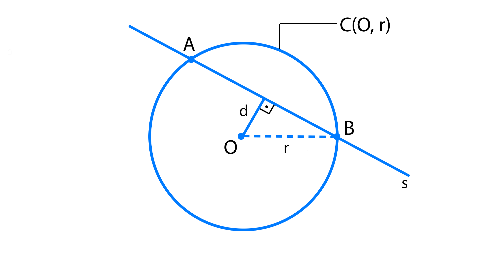
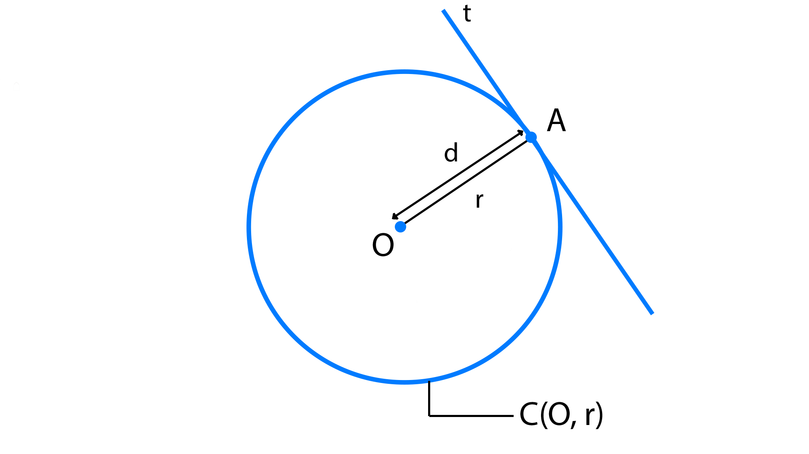
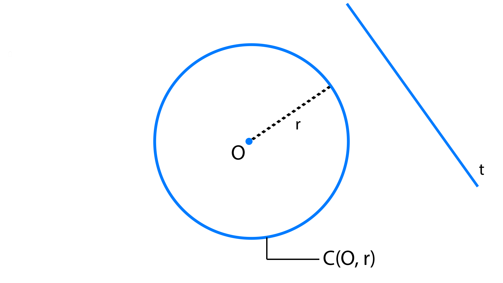

Uma reta é secante a uma circunferência quando tem dois pontos comuns com ela.
A palavra secante vem de seccionar, que significa "cortar".
Pontos em comum: {{ p1 }} e {{ p2 }}
Distância do centro à reta secante:
d = {{ distanceCenter | number:'1.0-3':'pt' }}
Raio:
r = {{ radius }}
A reta s é secante à circunferência C.

Uma reta é tangente a uma circunferência quando tem apenas um ponto em comum com ela.
A palavra tangente vem de tanger, que significa "tocar".
Distância do centro à reta tangente:
d = {{ distanceCenter | number:'1.0-3':'pt' }}
Raio:
r = {{ radius }}
A reta t é tangente à circunferência C, e A é denominado ponto de tangência (ou ponto de contato).

OBS: Observe que a distância do centro (O) à reta (t) é igual a medida do raio. Assim d = r.
Uma reta é externa a uma circunferência quando não tem nenhum ponto em comum com ela.
Distância do centro à reta externa:
d = {{ distanceCenter | number:'1.0-3':'pt' }}
Raio:
r = {{ radius }}
Exemplo
A reta t é externa à circunferência C.

OBS: Observe que a distância de uma reta externa ao centro de uma circunferência é maior que seu raio.